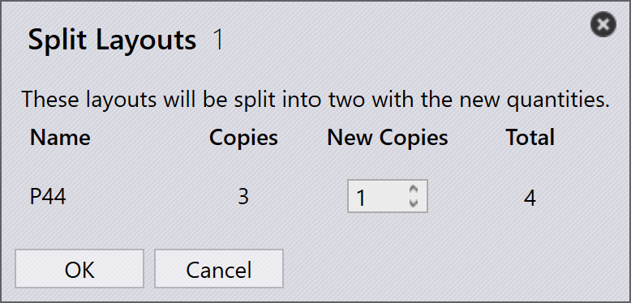

Layout-Bereich
Dieser Abschnitt erläutert layoutbezogene Aktionen wie Send to machine, Recall from machine, Export outputs, Mark complete, Add parts…, Adapt/Compact…, Split layout und andere Optionen zur Verwaltung von Layoutinstanzen.

|
|
Send to machine
-
Wenn eine Schachtelung fertig ist (gefüllt oder dringend benötigt), können Sie sie an die Maschine senden.
-
Klicken Sie mit der rechten Maustaste auf die Schachtelung und wählen Sie Send to machine….
-
Ein Ordner wird automatisch erstellt, benannt nach der Schachtelung.
-
Ausgabedateien (fxlyt, NC, Bericht, csv) werden an den JOB-Ausgabespeicherort exportiert.
-
An die Maschine gesendete Schachtelungen werden mit einem blauen Häkchen angezeigt.
| Nach der Freigabe werden diese Schachtelungen nicht mehr für das Umpacken erneut versucht. |
Recall from machine
-
Wenn die Ausgabe validiert oder aktualisiert werden muss (z. B. Hinzufügen weiterer Teile):
-
Klicken Sie mit der rechten Maustaste auf das exportierte Layout.
-
Wählen Sie Recall from machine….
-
-
Die Ausgabedateien und der Ordner (fxlyt, NC, Bericht, csv) werden gelöscht.
-
Die Schachtelung wird wieder bearbeitbar.
-
Sie können Änderungen vornehmen und sie erneut an die Maschine senden.
Export outputs
-
Klicken Sie mit der rechten Maustaste auf ein beliebiges Layout (Schachtelung), das an die Maschine gesendet wurde, und klicken Sie auf Export outputs.
-
Die Option Export Outputs exportiert die NC-, Bericht- und Layoutdateien in die jeweiligen Maschinenausgabeordner.
-
Diese Option generiert die NC-Datei mit den aktuellen Einheiteneinstellungen für das Layout neu.
| Export Outputs ist nicht verfügbar für Layouts, die Completed sind, und Layouts, die in der Warteschlange auf das Umpacken warten. |
Als abgeschlossen markieren
-
Sobald die Schachtelung auf der Maschine verarbeitet wurde, klicken Sie mit der rechten Maustaste auf die Schachtelung und wählen Sie Mark complete….
-
Sie können mehrere Schachtelungen auswählen und gleichzeitig als abgeschlossen markieren.
-
Wenn eine Schachtelung als abgeschlossen markiert wird:
-
Wird sie ausgegraut, ans Ende der Liste verschoben und mit einem grünen Häkchen angezeigt.
-
Wird das Layout aus der Liste der aktiven Layouts entfernt.
-
Werden Teile- und Jobstatus aktualisiert, und verarbeitete Mengen wechseln in den abgeschlossenen Zustand.
-
Werden Ausgabedateien für dieses Layout vom Maschinenausgabespeicherort entfernt, um eine doppelte Verwendung zu vermeiden.
-
Add parts…

-
Verwenden Sie diese Option, um weitere Teile zu einem relativ schlecht gepackten Layout hinzuzufügen. Wie Interactive Nesting ist dies eine assistentengesteuerte Option und kann gleichzeitig auf ein einzelnes oder mehrere Layouts angewendet werden.
-
TruSmartCAM blendet den Layout-Umpackassistenten im Hauptarbeitsbereich ein, wenn diese Option verwendet wird. Halten Sie die Ctrl-Taste gedrückt und wählen Sie ein oder mehrere Teile aus, die auf dem/den Layout(s) gepackt werden sollen, und drücken Sie Next.

-
Die ausgewählten Teile werden im nächsten Schritt mit einer bearbeitbaren Mengenspalte angezeigt. Aktualisieren Sie bei Bedarf die Teilemengen im Feld Update Qty. Klicken Sie auf Next, um mit dem Schachteln fortzufahren. Beachten Sie, dass Mengen nur erhöht, nicht verringert werden können.
-
Alle Layouts werden separat geschachtelt, und die geschachtelten Ergebnisse werden mit den neu gepackten Teilen darauf angezeigt. Die Auswahl des Layouts zeigt alle vorhandenen Layoutteile an. Das Ergebnis wird automatisch verworfen, wenn während des Umpackens kein neues Teil platziert wird. Ein Layout mit mehreren Kopien kann nach dem Umpacken zu unterschiedlichen Mustern führen.
Adapt/Compact…
-
Dieser assistentenbasierte Befehl kann verwendet werden, um ein Layout von einer Maschine an eine andere anzupassen, wenn die ursprüngliche Maschine ausgefallen ist oder wenn die Maschinenauslastung ausgeglichen werden muss.

-
Er kann verwendet werden, wenn die geplante Tafel nicht mehr auf Lager ist und das Layout auf einer anderen verfügbaren Tafel neu geplant werden muss.
-
Sie können Layouts, die auf kleineren Tafeln gepackt sind, auf größere Tafeln zusammenführen, um Material effizienter zu nutzen.
-
Sie können Layouts, die auf größeren Tafeln gepackt sind, in kleinere Tafeln aufteilen, wenn keine großen Tafelbestände verfügbar sind.
-
Sie können die Packeffizienz mehrerer Layouts (auch von verschiedenen Maschinen) verbessern, indem Sie sie zusammenführen.
-
Um ihn zu verwenden, wählen Sie ein oder mehrere Layouts aus und klicken Sie auf Adapt/Compact…, um den Assistenten im Arbeitsbereich zu öffnen.

-
Der linke Bereich zeigt alle ausgewählten Layouts, und der Bereich Parts zeigt die Layoutteile.
-
Wählen Sie die Zielmaschine und das Tafelmaterial aus und klicken Sie dann auf next, um die Neuschachtelung durchzuführen.
-
Die neuen Schachtelergebnisse werden im Ergebnisbereich angezeigt.
-
Klicken Sie auf next, um das angepasste oder verdichtete Layout zu speichern.

Ein Layout aufteilen
Mit der Option Split layouts… können Sie ein vorhandenes Layout durch Ändern von Mengen in mehrere Layouts aufteilen, ohne die Bewerkzeugung oder Schachtelung wiederholen zu müssen.
Diese Funktion ist besonders in den folgenden Szenarien nützlich:
-
Wenn Sie einen Teil der Gesamtmenge sofort produzieren und gleichzeitig die verbleibende Menge für die spätere Produktion einplanen müssen.
-
Wenn Produktionsanforderungen über mehrere Schichten oder Tage verteilt werden müssen, um Workflow und Ressourcennutzung zu optimieren.
-
Wenn eine bestimmte Maschine vorübergehend nicht verfügbar oder belegt ist und Sie das Layout an die aktuellen Produktionsbeschränkungen anpassen müssen.
Um ein Layout aufzuteilen, führen Sie die folgenden Schritte aus:
-
Wählen Sie in der Layoutansicht das erforderliche Layout aus.

-
Klicken Sie auf Split layouts….
-
Geben Sie den erforderlichen Wert in New Copies ein.

-
Klicken Sie auf OK.

Das ausgewählte Layout ist nun in zwei Layouts mit angepassten Mengen aufgeteilt.